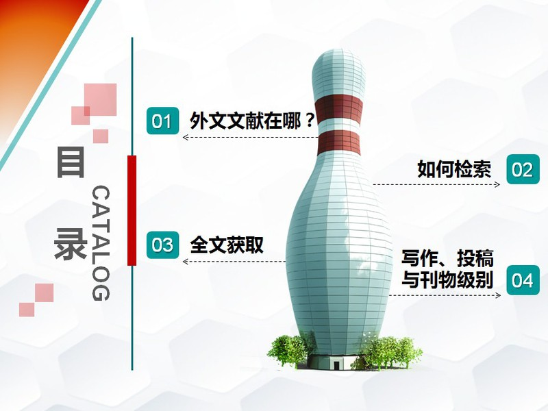

讲座题目：Web of Science 等文摘索引数据库的使用
主讲老师：黄勇副研究馆员
时 间：2018年12月20日（星期四）14:30-16:30
地 点：C113
备 注：同学们可自行带上电脑
培训内容：
Web of Science是世界上有影响的文摘索引型数据库，具有强大的引文检索、分析跟踪等特色功能，广泛用于科研成果评价。Ei Compendex侧重工程技术领域的文献报道，Scopus是目前收录文献最多的文摘型数据库。Web of Science核心合集数据库收录了12,000多种世界权威的、高影响力的学术期刊，其SCI、SSCI、A&HCI收录期刊为暨南大学A1类、A2类期刊。Ei Compendex收录论文为暨南大学A3类论文。本讲重点讲解 Web of Science 核心数据库的使用方法，同时简单介绍 Ei Compendex 和 Scopus 数据库。


课室管理系统


图书馆数据库培训讲座：Web of Science 等文摘索引数据库的使用